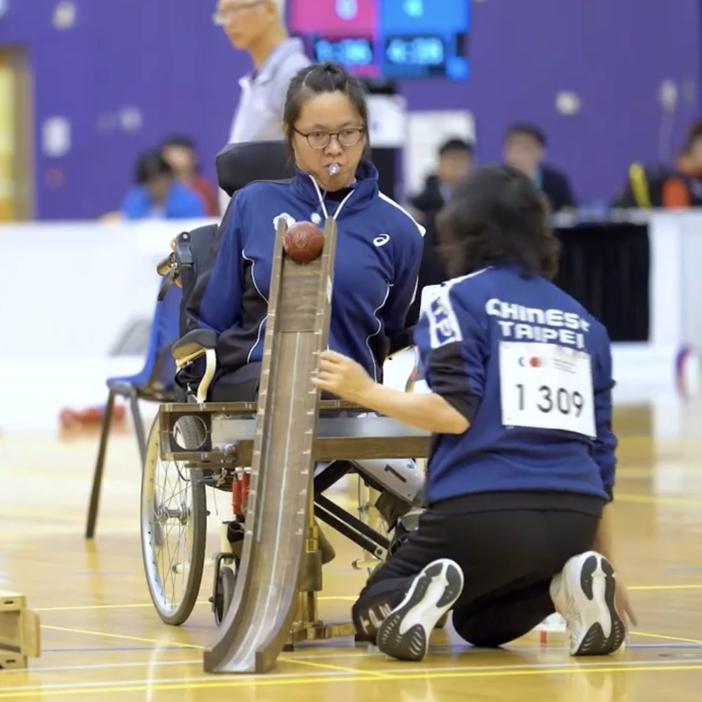
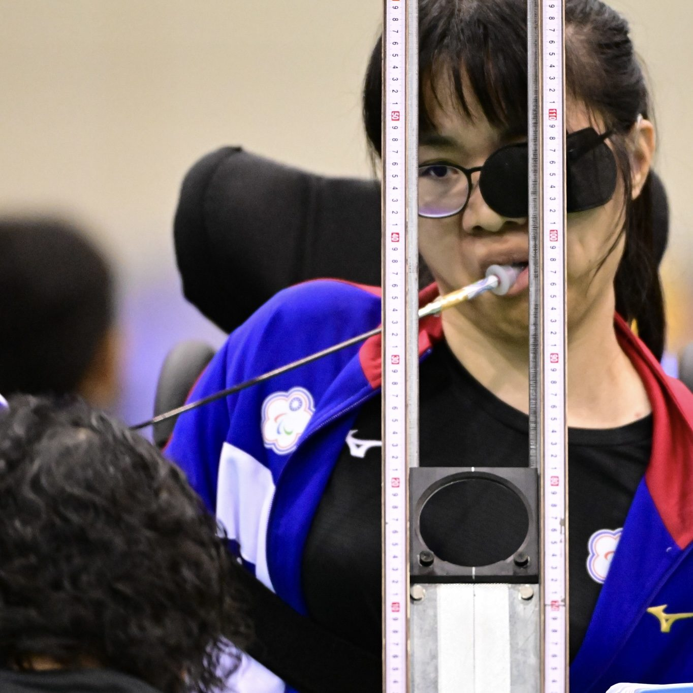

01我的故事
從無法參與運動，到成為場上主宰
我是陳怡臻，來自苗栗銅鑼，為一名重度身心障礙者（混合型腦性麻痺及聽力障礙），同時也是地板滾球（Boccia）BC3級選手。
自幼因肢體障礙的限制，我無法如同一般人自由參與各項運動。然而，在師長的引導下，我接觸到了地板滾球，這項專為重度肢體障礙者設計的運動，讓我第一次真正感受到「自己也能成為場上主導者」。透過輔具與助理員的協助，我不再只是被限制的一方，而是能夠主動思考戰術、掌控比賽節奏的選手。
投入地板滾球至今已邁入第十年了，2023年，我首次入選國家代表隊，代表台灣參加國際賽事，並於波茲南地板滾球挑戰賽中獲得第七名的成績。其後參與杭州亞洲帕拉運動會及香港亞洲錦標賽，雖然未能晉級，但每一次比賽的經驗都讓我更加成熟，也讓我更清楚自身需要精進的方向。

